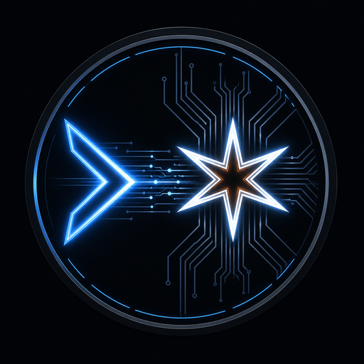

VS Code Editor
- Continue UI
- Editor context
- Inline completions

Continue × COMSTAR Orchestration
A VS Code coding assistant that routes every AI request through your own agentic-orchestration daemon. No cloud accounts. No data leaving your network.
The extension does not know which model answered, and it does not need to.
No code sent to cloud. All routing goes only to the URL in baseUrl. Host on LAN; nothing leaves unless server overlays call external APIs.
SQLite knowledge base on the daemon accumulates codebase knowledge across IDE restarts. Same sessionId = same context.
Ship with comstar-code and comstar-code-review. YAML on disk — edit agent personality, model selection, and tool access without touching extension code.
Thinking and assistant chunks delivered as they arrive via WebSocket. Optional mTLS for secure deployments.
git clone https://github.com/zlatko-lakisic/continue-comstar.git
cd continue-comstar
npm installnpm run build
# Then install the .vsix via:
code --install-extension extensions/vscode/build/continue-comstar-*.vsix
# Or press F5 in VS Code to launch dev mode# config.yaml — workspace root or ~/.continue/
name: continue-comstar
version: 0.0.1
schema: v1
models:
- name: COMSTAR Code
provider: ao_reach
baseUrl: wss://your-host:8765 # AO Reach endpoint
apiKey: $AO_REACH_TOKEN
sessionOverlay: comstar-code
timeoutSeconds: 300
streamingEnabled: true
# mtlsMaterialDir: ~/.continue-comstar/ao-mtlsFor active development. Optimized for completions, inline suggestions, and short-context reasoning. Routes to fast models via the daemon.
sessionOverlay: "comstar-code"
For PR and diff review. Optimized for longer context, explanation, and critique. Routes to higher-capacity models.
sessionOverlay: "comstar-code-review"